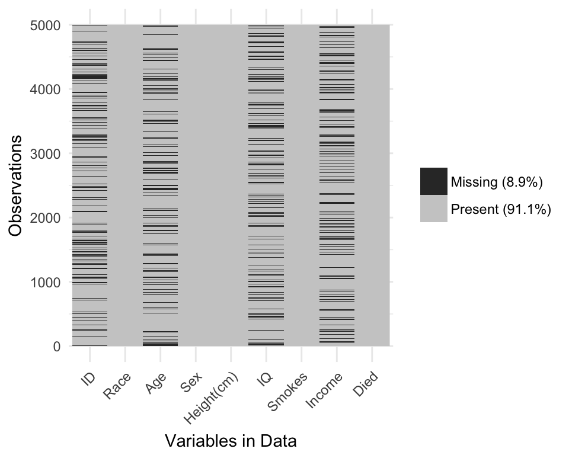
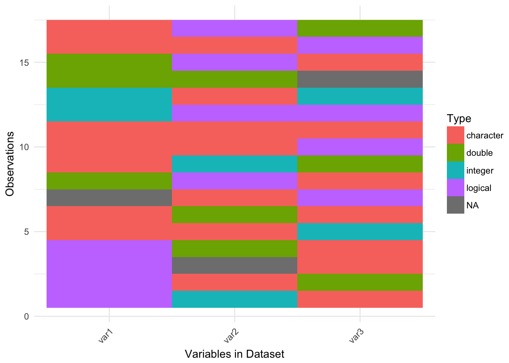
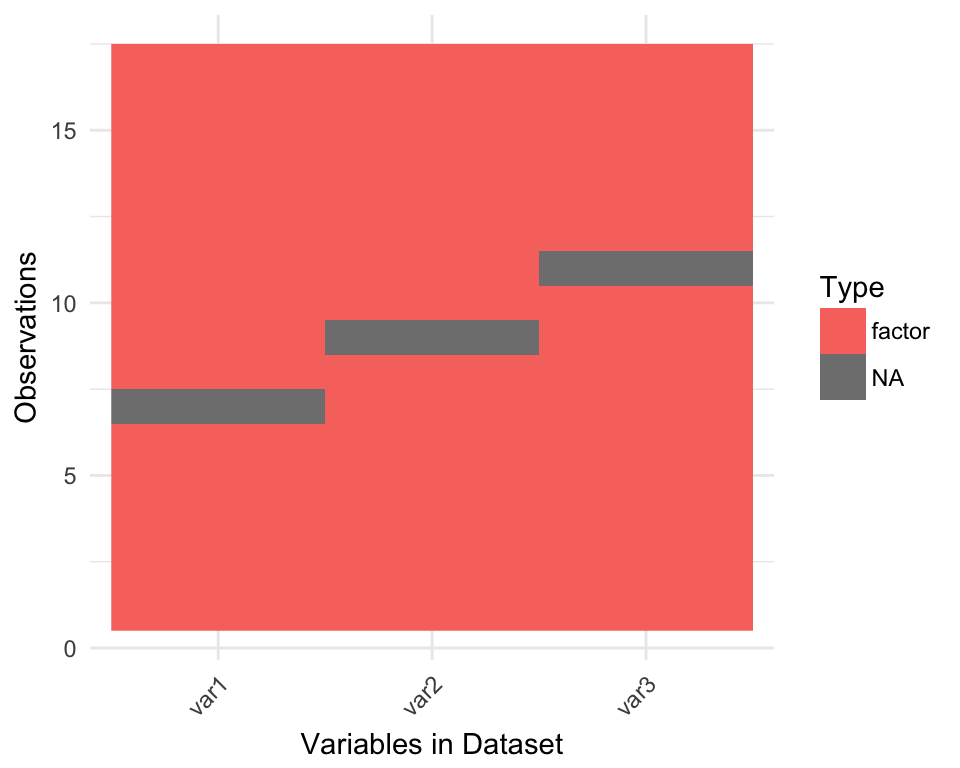

Using visdat
Nicholas Tierney
2017-02-05
In his R for Data Science book, Wickham describes 6 phases of data science:

Process of Data Science
You can get insight into your data by modelling, visualising, and transforming, which Wickham describes as “Understanding” or “knowledge generation”. There is some overlap here, as in this process it wouldn’t be surprising that you might uncover some feature of your dataset that you would need to clean up - you might discover that some strings were indeed factors, or that gender was considered numeric in your regression, warranting you to re-visit the Tidying phase.
In the same way, I think that this process gets applied in the Tidying step of data science. You read in your data, but you then need to look at it to understand what you need to do to “fix it”. And that’s a key phrase here “looking at the data” - what does that mean?
On the one hand, you can look at the head of the data:
head(iris)## Sepal.Length Sepal.Width Petal.Length Petal.Width Species
## 1 5.1 3.5 1.4 0.2 setosa
## 2 4.9 3.0 1.4 0.2 setosa
## 3 4.7 3.2 1.3 0.2 setosa
## 4 4.6 3.1 1.5 0.2 setosa
## 5 5.0 3.6 1.4 0.2 setosa
## 6 5.4 3.9 1.7 0.4 setosaOr you can have a glimpse at it through dplyr::glimpse
dplyr::glimpse(iris)## Observations: 150
## Variables: 5
## $ Sepal.Length <dbl> 5.1, 4.9, 4.7, 4.6, 5.0, 5.4, 4.6, 5.0, 4.4, 4.9,...
## $ Sepal.Width <dbl> 3.5, 3.0, 3.2, 3.1, 3.6, 3.9, 3.4, 3.4, 2.9, 3.1,...
## $ Petal.Length <dbl> 1.4, 1.4, 1.3, 1.5, 1.4, 1.7, 1.4, 1.5, 1.4, 1.5,...
## $ Petal.Width <dbl> 0.2, 0.2, 0.2, 0.2, 0.2, 0.4, 0.3, 0.2, 0.2, 0.1,...
## $ Species <fctr> setosa, setosa, setosa, setosa, setosa, setosa, ...Here we see that we have doubles, and a factor. We get some insight into the data.
But we don’t always have data like the canonical iris dataset. let’s take a look at some data that might be a bit more typical of “messy” data.
library(visdat)
dplyr::glimpse(typical_data)## Observations: 5,000
## Variables: 9
## $ ID <chr> "0001", "0002", "0003", "0004", "0005", NA, "0007",...
## $ Race <fctr> White, Hispanic, White, Black, White, Hispanic, Hi...
## $ Age <int> 34, 25, 35, NA, NA, NA, 26, 31, 20, 26, NA, NA, 21,...
## $ Sex <fctr> Female, Male, Male, Female, Male, Male, Male, Fema...
## $ Height(cm) <dbl> 181.6, 174.3, 171.9, 188.4, 171.1, 179.5, 175.8, 17...
## $ IQ <dbl> 100, 100, 104, 116, 106, 105, 95, 98, 88, NA, 96, 1...
## $ Smokes <lgl> FALSE, FALSE, FALSE, FALSE, FALSE, FALSE, TRUE, FAL...
## $ Income <dbl> 33873.82, 38799.39, 7235.28, 29629.44, 19990.00, 69...
## $ Died <lgl> TRUE, TRUE, FALSE, TRUE, TRUE, FALSE, FALSE, TRUE, ...Looking at this, you might then ask:
Isn’t it odd that Income is a factor? And Age is a character?
And you might start to wonder what else is different, what else changed?
And it might be a bit unclear where to go from there. Do you plot the data? Why does my plot look weird? What are these other strange features in the data? The visdat package provides visualisations of an entire dataframe at once. Initially inspired by csv-fingerprint, visdat provides tools to create heatmap-like visualisations of an entire dataframe. visdat provides 2 main functions: vis_dat and vis_miss.
vis_dat() helps explore the data class structure and missingness:
vis_dat(typical_data)## dmap() is deprecated. Please use the new colwise family in dplyr.
## E.g., summarise_all(), mutate_all(), etc.## Warning: attributes are not identical across measure variables; they will
## be dropped
And the vis_miss function provides a custom plot for missing data.
vis_miss(typical_data)## Warning: attributes are not identical across measure variables; they will
## be dropped
The name visdat was chosen as it borrows from the idea of testdat, which provides unit testing for your data. In a similar way, visdat provides visual tests, the idea being that first you visualise your data (visdat), then you run tests from testdat, or a package like assertr, to fix these errors.
Using vis_dat
Let’s see what’s inside the dataset airquality.
library(visdat)
vis_dat(airquality)## dmap() is deprecated. Please use the new colwise family in dplyr.
## E.g., summarise_all(), mutate_all(), etc.
The plot above tells us that R reads this dataset as having numeric and integer values, along with some missing data in Ozone and Solar.R. The classes are represented on the legend, and missing data represented by black.
By default, vis_dat sorts the columns according to the type of the data in the vectors. You can turn this off by setting sort_type = FALSE. This feature is better illustrated using the typical_data dataset, created using wakefield and contained within visdat.
vis_dat(typical_data)## dmap() is deprecated. Please use the new colwise family in dplyr.
## E.g., summarise_all(), mutate_all(), etc.## Warning: attributes are not identical across measure variables; they will
## be dropped
vis_dat(typical_data,
sort_type = FALSE)## dmap() is deprecated. Please use the new colwise family in dplyr.
## E.g., summarise_all(), mutate_all(), etc.## Warning: attributes are not identical across measure variables; they will
## be dropped
Using vis_miss
We can explore the missing data further using vis_miss.
vis_miss(airquality)
Notice that the percentages of missingness are provided in the data. These are accurate to 1 decimal place. When there is <0.1% of missingness, vis_miss indicates that there is >1% missingness.
df_test <- data.frame(x1 = 1:10000,
x2 = rep("A", 10000),
x3 = c(rep(1L, 9999), NA))
vis_miss(df_test)## Warning: attributes are not identical across measure variables; they will
## be dropped
vis_miss will also indicate when there is no missing data at all.
df_test <- data.frame(x1 = 1:10000,
x2 = rep("tidy", 10000),
x3 = rep("data", 10000))
vis_miss(df_test)## Warning: attributes are not identical across measure variables; they will
## be dropped
Columns can be arranged by columns with most missingness, by setting sort_miss = TRUE.
vis_miss(airquality,
sort_miss = TRUE)
And missingness can be clustered by setting cluster = TRUE
vis_miss(airquality,
cluster = TRUE)
To further explore the missingness structure in a dataset, I recommend the naniar package, which provides more general tools for graphical and numerical exploration of missing values.
Interactivity
Thanks to Carson Sievert, you can now add some really nifty interactivity into visdat by using plotly::ggplotly, allowing for information to be revealed upon mouseover of a cell.
library(plotly)
vis_dat(airquality, flip = TRUE) %>% ggplotly()## dmap() is deprecated. Please use the new colwise family in dplyr.
## E.g., summarise_all(), mutate_all(), etc.vis_miss(airquality) %>% ggplotly()There is also an in-development feature, vis_miss_ly, which directly uses plotly’s code, which is faster than calling ggplotly(vis_dat(df)).
vis_miss_ly(airquality)Although some work is needed still to fix the legend and fill, and add percentages to the legend.
using vis_guess
vis_guess takes a guess at what each cell is. It’s best illustrated using some messy data, which we’ll make here.
messy_vector <- c(TRUE,
T,
"TRUE",
"T",
"01/01/01",
"01/01/2001",
NA,
NaN,
"NA",
"Na",
"na",
"10",
10,
"10.1",
10.1,
"abc",
"$%TG")
messy_df <- data.frame(var1 = messy_vector,
var2 = sample(messy_vector),
var3 = sample(messy_vector))Here if we just glimpse messy_df, we get
dplyr::glimpse(messy_df)## Observations: 17
## Variables: 3
## $ var1 <fctr> TRUE, TRUE, TRUE, T, 01/01/01, 01/01/2001, NA, NaN, NA, ...
## $ var2 <fctr> NaN, abc, 01/01/2001, NA, 10, TRUE, Na, 10, NA, 01/01/01...
## $ var3 <fctr> na, 01/01/2001, 10.1, abc, 01/01/01, T, $%TG, TRUE, 10.1...It looks like we have 3 factors. But this seems a bit strange. vis_guess takes a guess at what each element is, visualising it for you:
vis_guess(messy_df)## vis_guess is still in BETA! If you have suggestions or errors,
## post an issue at https://github.com/njtierney/visdat/issues
So here we see that there are many different kinds of data in your dataframe. As an analyst this might be a depressing finding. Compare this to vis_dat.
vis_dat(messy_df)## dmap() is deprecated. Please use the new colwise family in dplyr.
## E.g., summarise_all(), mutate_all(), etc.
Where you’d just assume your data is weird because it’s all factors - or worse, not notice that this is a problem.
At the moment vis_guess is slow. Please take this into consideration when you are using it on data with more than 1000 rows. We’re looking into ways of making it faster, potentially using methods from the parallel package, or extending the c++ code from readr::parse_guess.
Future work and experimental features
visualising expectations
The idea is to pass expectations into vis_dat or vis_miss, along the lines of the expectation command in assertr. For example, you could ask vis_dat to identify those cells with values of -1 with something like this:
data %>%
expect(value == -1) %>%
vis_dat